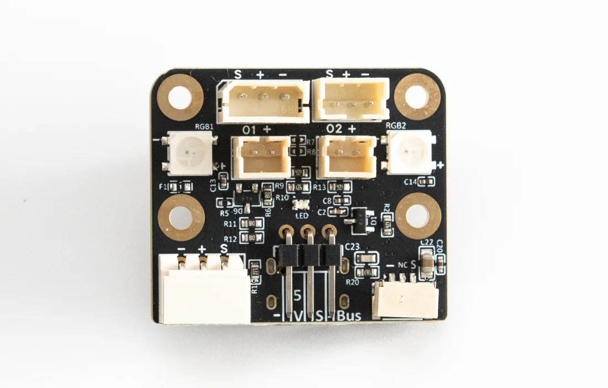
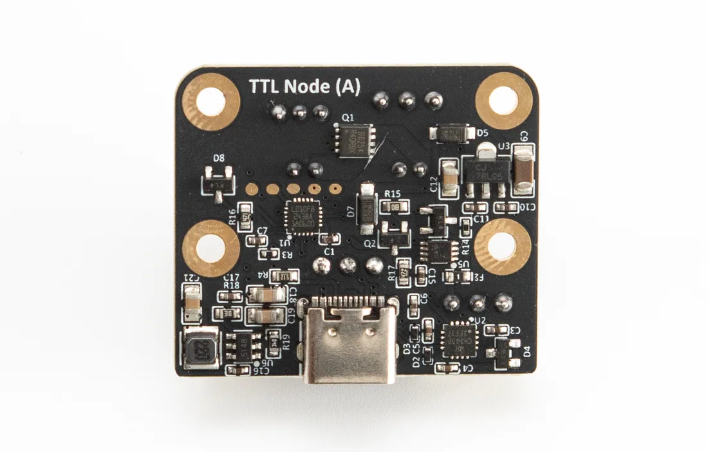
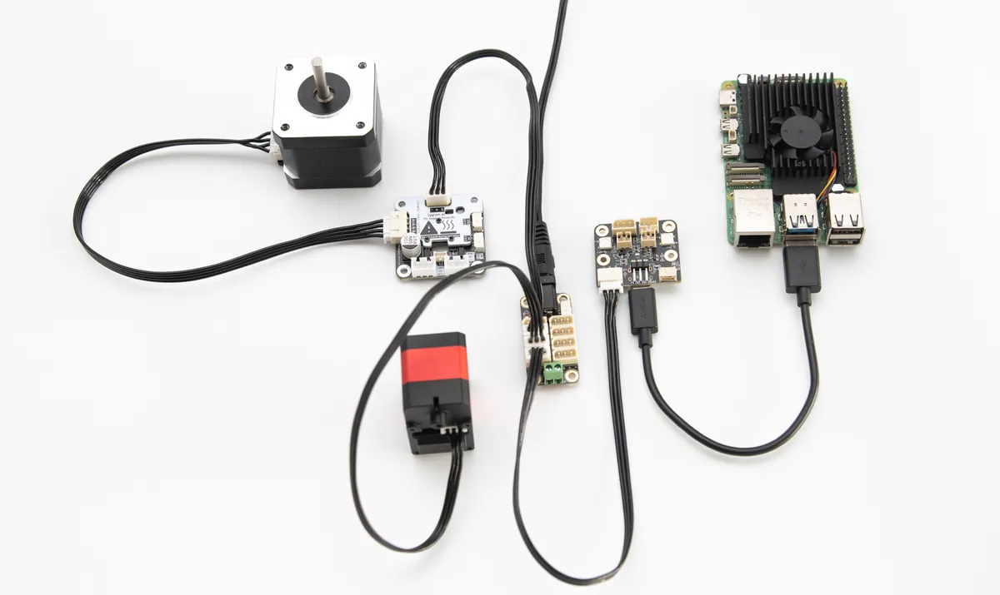
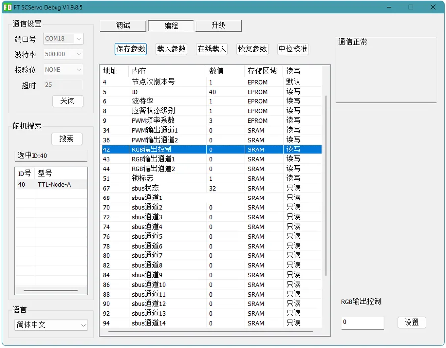
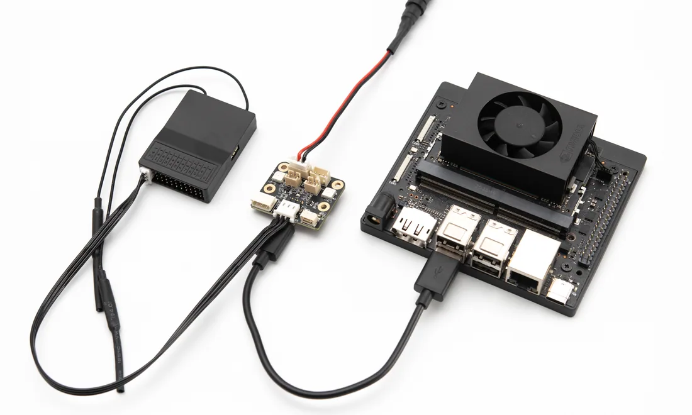
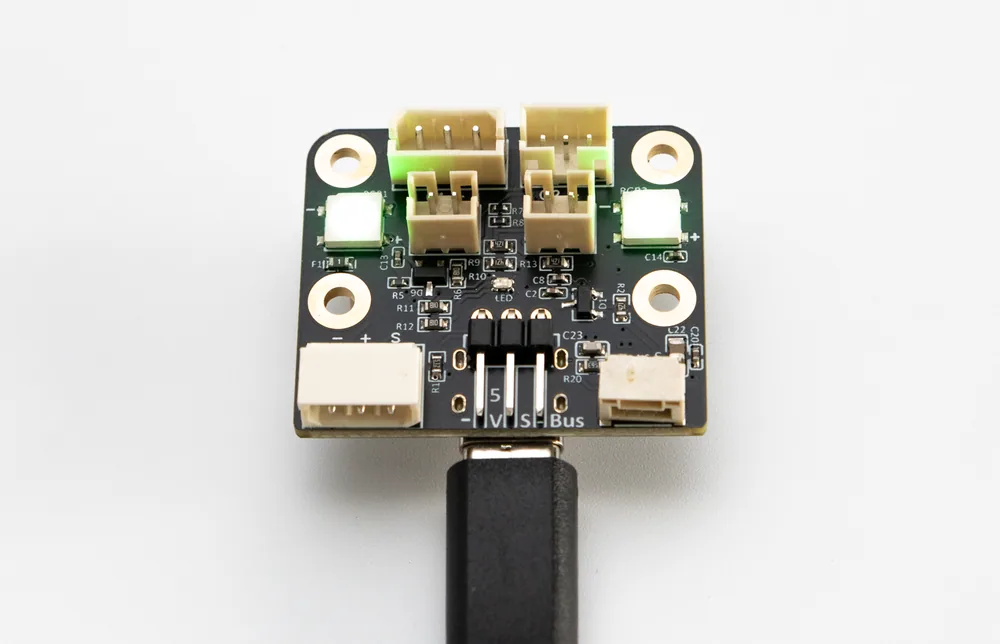
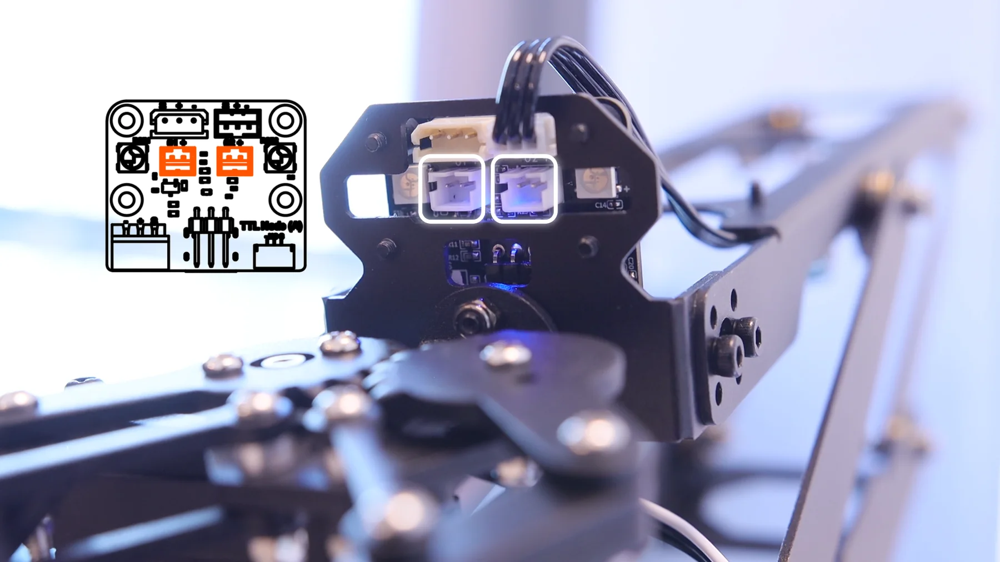
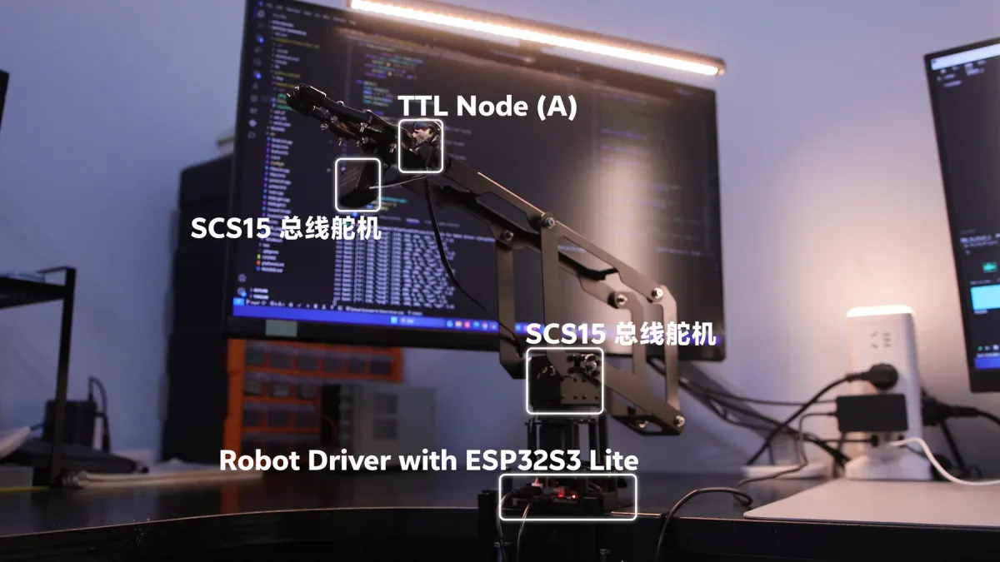
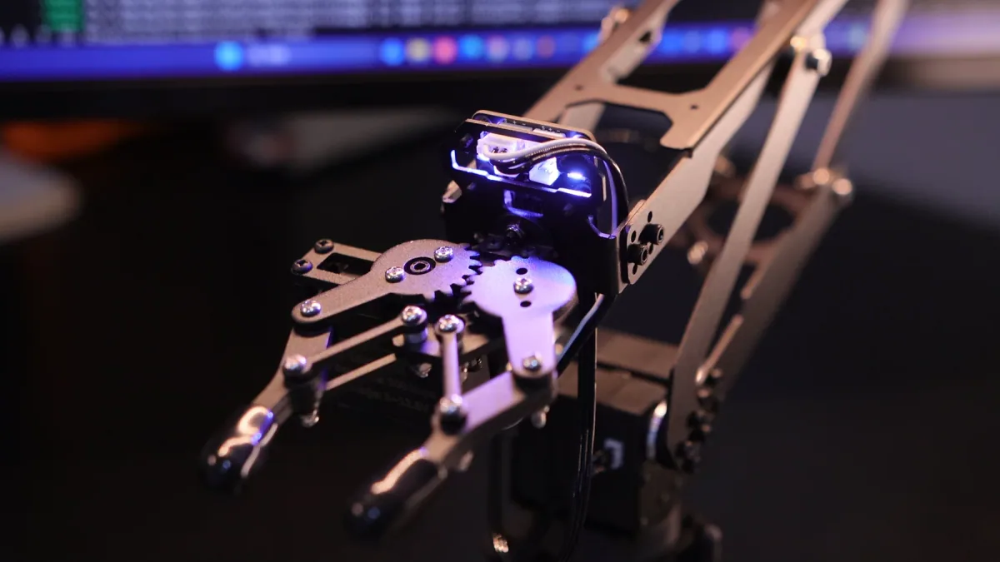
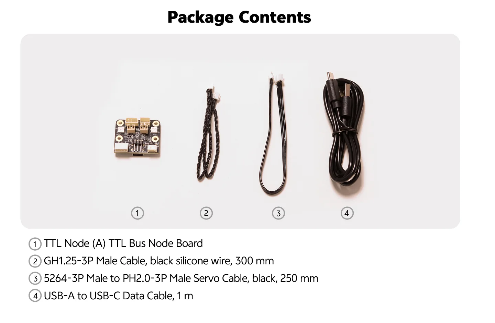

S.BUS 遥控输入
把航模接收器的通道数据接入控制系统，适合遥控底盘、机械臂等需要远程控制的场景。
遥控信号接入总线WHAT IT DOES
很多机器人项目不仅需要关节和轮子控制，还需要遥控输入、状态指示、辅助输出和调参入口。TTL Node (A) 把这些零散功能集中到同一块小板上，简化机器人系统复杂度。
把航模接收器的通道数据接入控制系统，适合遥控底盘、机械臂等需要远程控制的场景。
遥控信号接入总线通过 USB Type-C 直连电脑、Raspberry Pi 或 Jetson 等单板电脑，搜索总线设备、设置 ID、测试功能和读取状态都更直接。
上手更快，接线简单两路 PWM 输出可用于简单外设控制，适合直流补光灯、电磁铁、电磁阀、风扇等小负载设备。
控制更多设备、更实用可通过总线控制两路 RGB 灯的颜色，让机器人状态反馈更直观，也可以避免复杂接线和避免额外的 IO 占用。
系统状态一眼可见INTERFACE DETAIL



BUS INTEGRATION
TTL Node (A) 可以通过 USB 直接控制，也可以接入灵影总线，与步进电机驱动板、编码器等设备共用通信链路。
FD SOFTWARE
TTL Node (A) 的常用功能可以先在 FD 软件中实现：搜索设备、更改 ID、查看状态、读取输入、测试输出。调试门槛更低更高效。
先确认设备在线和 ID，再测试 S.BUS、PWM、RGB 等单项功能。等每一项都确认稳定后，再用 Python、C++ 或 Arduino 例程接入实际控制逻辑。

APPLICATIONS
TTL Node (A) 的价值在于把“机器人身上的小功能”收拢成可管理的节点。下面这些场景都适合用它减少接线复杂度。





SPECIFICATIONS

PACKAGE
DOCUMENTATION
调试工具、SDK 与开发教程等资料可参考产品 Wiki。